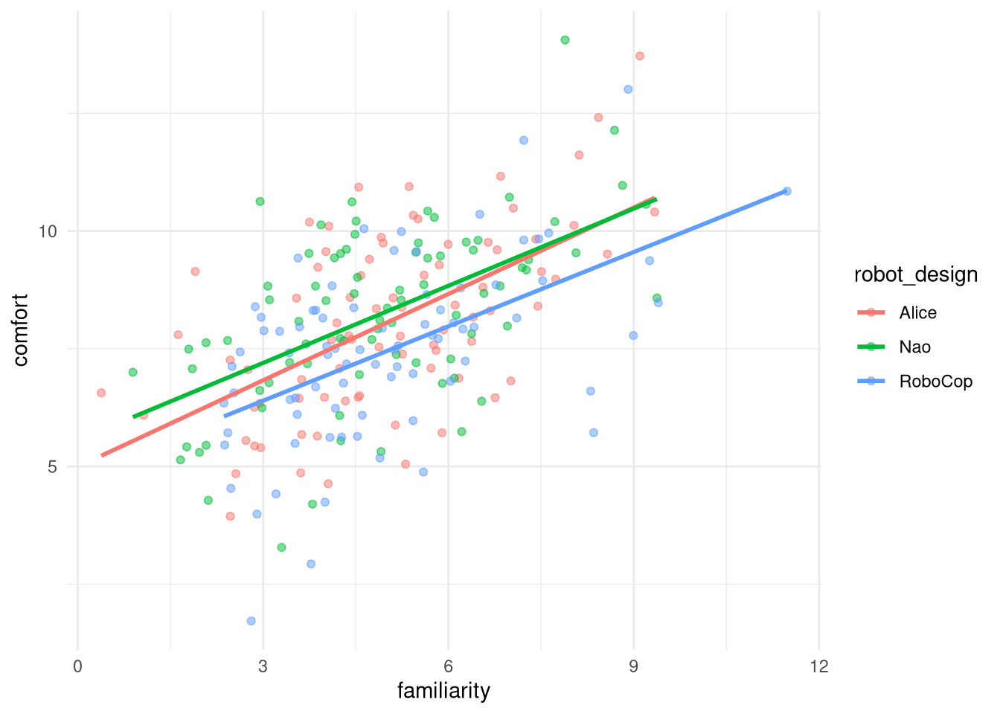
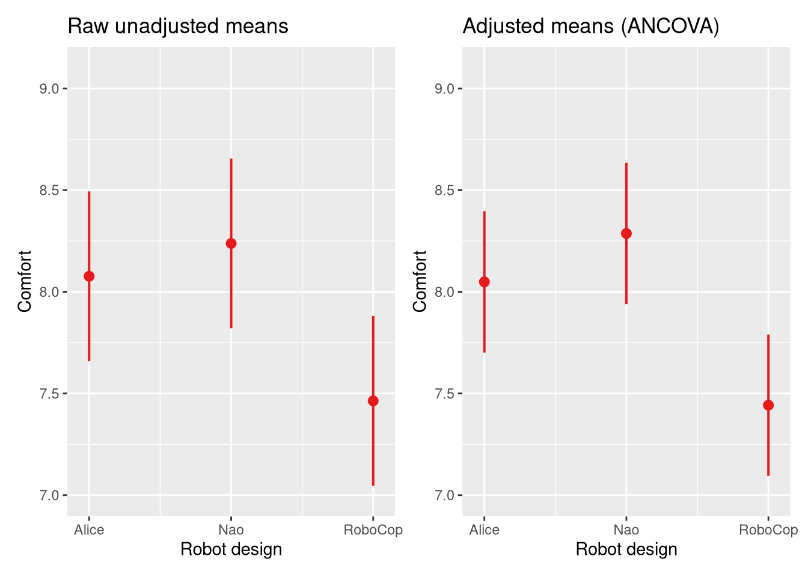
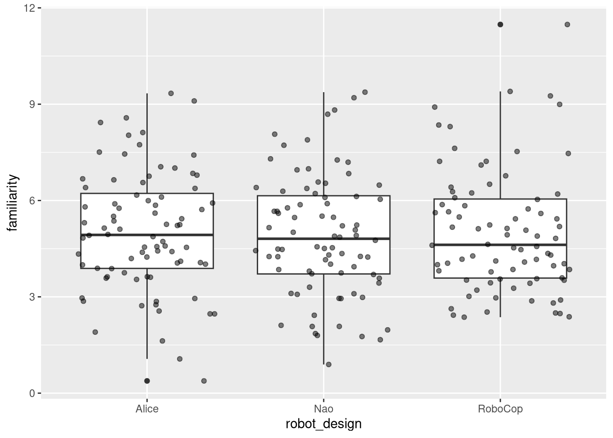

library(tidyverse)
library(summarytools)
library(afex)
library(emmeans)
library(sjPlot)ANCOVA
Analysis of Covariance
What is ANCOVA?
In a previous chapter we introduced ANOVA (Analysis of Variance) as a method to test whether group means differ significantly. ANOVA works well when the dependent variable is (hypothesized to be) influenced only by the independent variable(s). In practice, however, outcomes are often influenced by additional variables that are not part of the experimental manipulation. For example:
- Students may differ in prior knowledge;
- Participants may differ in age;
- Individuals may differ in motivation.
Such variables introduce extra variability in the dependent variable.
ANCOVA (Analysis of Covariance) extends ANOVA by including a continuous control variable, called a covariate. In short, ANCOVA does the same as ANOVA, which is comparing group means, while additionally controlling for another variable. Conceptually, ANCOVA sits at the intersection of ANOVA and linear regression.
When do we use ANCOVA?
ANCOVA is useful for two reasons:
1. Controlling for confounding variables
A covariate may influence the dependent variable but is not the main variable of interest. For example: If we compare learning outcomes across teaching methods, students’ prior knowledge may influence the outcome. Including ‘prior knowledge’ as a covariate allows us to compare teaching methods while holding prior knowledge constant.
2. Reducing unexplained variance
Even if the covariate is not a confounder, it may still explain part of the outcome variability. Accounting for this variability reduces residual variance, which can increase statistical power.
What happens to variance when adding a covariate?
Recall from the ANOVA chapter that total variability in the dependent variable is partitioned into:
- between-group variance (explained by the independent variable)
- within-group variance (unexplained error)
When we add a covariate in ANCOVA, part of the variability that was previously counted as within-group error is now explained by the covariate!
This has two important consequences:
- The within-group variance decreases, because the covariate accounts for systematic differences between individuals;
- As a result, the signal-to-noise ratio increases, making it easier to detect differences between groups!
Conceptually, ANCOVA “cleans up” the error term by removing variance that is not relevant to the group comparison and turns it into explained variance, which increases statistical power.
Importantly, the between-group variance is now evaluated after adjusting for the covariate. This means that group differences reflect differences over and above the effect of the covariate.
How to use it
Suppose we study whether different robot designs influence how comfortable people feel interacting with a robot. Participants interact with one of three robots: ‘Alice’, ‘Nao’ and ‘Robocop’. They then report their comfort level.
However, participants also differ in their familiarity with robots, which may affect comfort ratings, regardless of the robot design they were presented with! We might expect that participants who are more familiar with robots feel more comfortable interacting with them. We therefore include robot familiarity as a covariate to control for this.
Before we proceed with any analysis, we load relevant packages, import the dataset and inspect the variables:
setwd()
robot_data <- read_csv("robot_data.csv")robot_data |> summary() robot_design interaction_type familiarity comfort
Alice :80 Touch:120 Min. : 0.3817 Min. : 1.720
Nao :80 Voice:120 1st Qu.: 3.7378 1st Qu.: 6.671
RoboCop:80 Median : 4.8453 Median : 7.910
Mean : 4.9892 Mean : 7.926
3rd Qu.: 6.1368 3rd Qu.: 9.375
Max. :11.4821 Max. :14.059
id
Min. : 1.00
1st Qu.: 60.75
Median :120.50
Mean :120.50
3rd Qu.:180.25
Max. :240.00 One-way ANCOVA
Any one-way ANCOVA includes:
- one categorical independent variable
- one covariate
- one continuous dependent variable
In our example, we consider the following design:
- IV =
robot_design(Alice, Nao or Robocop) - Covariate =
familiarity - DV =
comfort

The plot above indicates that there is indeed a linear relationship between familiarity and comfort, suggesting it’s relevant to include the effect of one’s (prior) familiarity with robots on their comfort level in the analysis.
We estimate the model using the function aov_car() from the afex package. For Error(), we specify that our individual cases can be distinguised by the variable id. Finally, we specify factorize = FALSE, which means that we don’t want R to turn our (numeric) covariate into a factor variable. With this we do assume, though, that our other independent variable(s) is/are correctly coded as factors.
model_ancova <- aov_car(
comfort ~ robot_design + familiarity + Error(id),
data = robot_data,
factorize = FALSE
)
model_ancovaAnova Table (Type 3 tests)
Response: comfort
Effect df MSE F ges p.value
1 robot_design 2, 236 2.49 6.09 ** .049 .003
2 familiarity 1, 236 2.49 105.94 *** .310 <.001
---
Signif. codes: 0 '***' 0.001 '**' 0.01 '*' 0.05 '+' 0.1 ' ' 1model_ancova$AnovaThe model above tests whether whether robot designs differ in comfort (F = 6.09, p < 0.01) and whether familiarity predicts comfort (F = 105.94, p < 0.001). The effect of robot design has now been tested while controlling for familiarity.
(Un)adjusted means
Because familiarity influences comfort, ‘raw’ group means could be misleading. ANCOVA therefore compares adjusted means:
emmeans(model_ancova, "robot_design") robot_design emmean SE df lower.CL upper.CL
Alice 8.05 0.176 236 7.70 8.40
Nao 8.29 0.177 236 7.94 8.63
RoboCop 7.44 0.176 236 7.09 7.79
Confidence level used: 0.95 These means represent expected comfort levels if all participants had the same level of familiarity. By default, the covariate is held constant at its sample mean (here 4.99) and group means are then estimated as if all participants had that same (average) level of familiarity. Let’s compare that to the output below, showing the unadjusted means (from a ‘regular’ ANOVA model).
model_anova <- aov_car(
comfort ~ robot_design + Error(id),
data = robot_data
)
emmeans(model_anova, "robot_design") robot_design emmean SE df lower.CL upper.CL
Alice 8.08 0.212 237 7.66 8.49
Nao 8.24 0.212 237 7.82 8.66
RoboCop 7.46 0.212 237 7.05 7.88
Confidence level used: 0.95 The plots below visualize the difference between adjusted and unadjusted means. The adjusted and unadjusted means are similar. We did, however find a substantial effect of the covariate on comfort (r = sqrt(.310) = 0.56). This suggests that the covariate familiarity explains a lot of individual variability between participants (within-group variance), but is not related to group membership! This is normal in an experimental settings, where we certainly do not expect to influence which robot design participants were presented with.

Assumptions of ANCOVA
Besides the assumption of equal (error) variances that we’ve learned to test with the Levene’s test, there are two additional assumptions to consider when performing an ANCOVA.
Independence of the covariate
The covariate (here familiarity) should not differ systematically between groups of the grouping variable (robot_design). We test for this assumption by estimating a model that studies whether there are differences in covariate means for the groups of the independent grouping variable:
cov_indep <- aov_car(
familiarity ~ robot_design + Error(id),
data = robot_data,
)
cov_indepAnova Table (Type 3 tests)
Response: familiarity
Effect df MSE F ges p.value
1 robot_design 2, 237 3.55 0.13 .001 .879
---
Signif. codes: 0 '***' 0.001 '**' 0.01 '*' 0.05 '+' 0.1 ' ' 1The analysis suggests that there are no pre-existing differences in familiarity between robot design groups (F = 0.13, p > 0.05). The plot below supports and visualizes this conclusion: we observe that the three group means on familiarity (for Alice, Nao and Robocop) are approximately the same.

Should familiarity strongly differ between groups, ANCOVA adjusts for pre-existing differences rather than purely isolating the effect of the independent variable. In randomized experiments this assumption is typically satisfied. In observational data it should be checked explicitly.
Homogeneity of regression slopes
The assumption of homogeneity of regressino slopes suggests implies that the relationship between the covariate and the dependent variable should be similar across groups. We test for this by including the interactino between the covariate and the independent grouping variable in the model. If the interaction between the covariate and the factor is not significant, the assumption is likely satisfied.
model_slopes <- aov_car(
comfort ~ robot_design * familiarity + Error(id),
data = robot_data,
factorize = FALSE
)
model_slopesAnova Table (Type 3 tests)
Response: comfort
Effect df MSE F ges p.value
1 robot_design 2, 234 2.51 0.61 .005 .546
2 familiarity 1, 234 2.51 105.54 *** .311 <.001
3 robot_design:familiarity 2, 234 2.51 0.22 .002 .803
---
Signif. codes: 0 '***' 0.001 '**' 0.01 '*' 0.05 '+' 0.1 ' ' 1The interaction between robot_design and familiarity is not significant (F = 0.22, p > 0.05). There is no evidence that the assumption of homogeneity of regression lines is violated.
The plot that we’ve seen earlier in this chapter helps us visualize the outcomes of above assumption test, as we notice how the regression slopes for the different robot designs are almost parallel:

Two-way ANCOVA
We now extend the model by including interaction type as a second factor: the interaction type with the robot, which could be through touch or through voice. Participants have been divided 50/50 on this variable, which leads to 6 groups of 40 participants in the experiment.
robot_data |> freq(interaction_type)Frequencies
robot_data$interaction_type
Type: Factor
Freq % Valid % Valid Cum. % Total % Total Cum.
----------- ------ --------- -------------- --------- --------------
Touch 120 50.00 50.00 50.00 50.00
Voice 120 50.00 100.00 50.00 100.00
<NA> 0 0.00 100.00
Total 240 100.00 100.00 100.00 100.00table(robot_data$robot_design, robot_data$interaction_type)
Touch Voice
Alice 40 40
Nao 40 40
RoboCop 40 40We now include two independent grouping variables (robot_design and interaction_type) and a covariate (familiarity) in the model.
model_two_way <- aov_car(
comfort ~ robot_design * interaction_type +
familiarity + Error(id),
data = robot_data,
factorize = FALSE
)
model_two_wayAnova Table (Type 3 tests)
Response: comfort
Effect df MSE F ges p.value
1 robot_design 2, 233 2.36 6.43 ** .052 .002
2 interaction_type 1, 233 2.36 15.54 *** .063 <.001
3 familiarity 1, 233 2.36 113.83 *** .328 <.001
4 robot_design:interaction_type 2, 233 2.36 0.18 .002 .838
---
Signif. codes: 0 '***' 0.001 '**' 0.01 '*' 0.05 '+' 0.1 ' ' 1model_two_way$AnovaThis model tests
- the main effect of robot design (F = 6.43, p < 0.01);
- the main effect of interaction type (F = 15.54, p < 0.001);
- the interaction between the two (F = 0.18, p > 0.05); and
- the effect of the covariate (F = 113.83, p < 0.001).
The interpretation of main and interaction effects is identical to the two-way ANOVA discussed in the previous chapter. The key difference is that we now control for familiarity. Should we present estimated marginal means, familiarity would still be held constant at its sample mean.
Comparing models
To understand how controlling for a covariate increases model explanatory power, we also perform a (two-way) ANOVA without the covariate. Let’s then compare the Sum of Squares of the Residuals (RSS), i.e.: error variance, of both models.
# Two-way ANOVA
twoway_anova <- aov_car(
comfort ~ robot_design * interaction_type + Error(id),
data = robot_data
)
twoway_anova$Anova# Two-way ANCOVA
model_two_way$AnovaThe error variance has decreased by 819.1 - 550.29 = 268.81 after indlucing the covariate familiarity in the model. This is the amount of variance now explained by the covariate.
Summary
ANCOVA extends ANOVA by including a covariate. The main takeaways of this chapter should be that ANCOVA…
- compares group means while controlling for a continuous variable;
- reduces unexplained variance and, as such, can increase statistical power;
- requires additional assumptions, which are independence of the covariate and homogeneity of regression slopes; and
- can be extended to factorial designs such as two-way ANCOVA.